<mat-toolbar class="mat-toolbar-custom">
    <button mat-icon-button class="example-icon" aria-label="Example icon-button with menu icon">
        
    </button>
    <button mat-icon-button class="example-icon" aria-label="Example icon-button with menu icon">
        
    </button>
    <button mat-icon-button class="example-icon" aria-label="Example icon-button with menu icon">
        
    </button>

    <span class="example-spacer"></span>


    <span matBadge="1" matBadgeColor="warn" matBadgeSize="small" matBadgeColor="accent">
        
    </span>
    <span class="aligned-with-icon">Account</span>


</mat-toolbar>